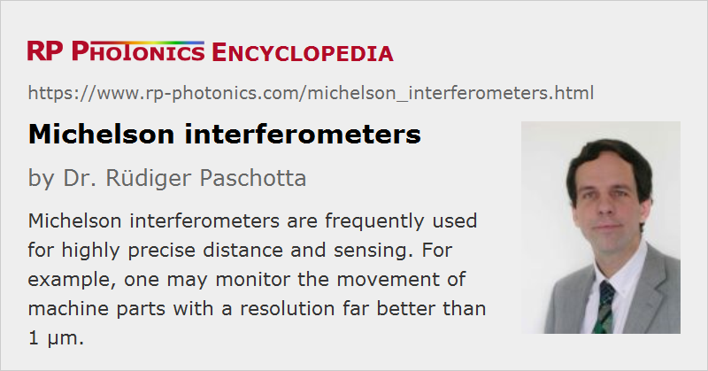

Michelson Interferometers
Definition: an interferometer with two separate arms and a single beam splitter
More general terms: interferometers, optical metrology instruments
German: Michelson-Interferometer
Categories: photonic devices, optical metrology
How to cite the article; suggest additional literature
Author: Dr. Rüdiger Paschotta
A Michelson interferometer, as invented by Albert Abraham Michelson in the late 19th century, is a very common type of interferometer, which is frequently used for measuring distances or their changes, but also in various other applications (see below).
Interferometer Setup and Operation Principle
Such an interferometer is usually operated with a laser as a quasi-monochromatic light source, although this is not strictly required; the original invention by Michelson was done long before the first laser, and there are still important applications with other light sources, e.g. superluminescent sources in white light interferometers of Michelson type.
It is advantageous to have a single transverse mode laser beam, approximating a Gaussian beam. Typically, the beam radius is kept relatively small, but large enough to have a collimated beam with roughly constant beam radius along the whole path. For that, the Rayleigh length should be at least as large as the total path length involved.

A Michelson interferometer (see Figure 1) contains a single beam splitter for separating and recombining the beams. There are two interferometer arms (each one extending from the beam splitter to an end mirror), which are completely separated in this design. The beams are aligned such that the overlap of the two beams going towards the photodetector is as good as possible. Ideally, one has two beams with equal complex amplitude profiles (e.g. Gaussian beams with equal beam radius), going along the same axis. In that case, one does not observe a fringe pattern at the detector, but rather a beam having a profile with constant shape and only variable power.
The beam splitter can be a half-silvered mirror, for example, or a dielectric mirror. Its reflectivity is normally chosen to be around 50 %.
In the simplest implementation with ordinary end mirrors (Figure 1, top), each beam may exactly be reflected back in itself, which however may be problematic for the light source; many lasers are sensitive to optical feedback, which may e.g. destabilize their operation.
Therefore, one may introduce a slight tilt of the two end mirrors (Figure 1, middle), such that the reflected beams meet on a slightly separate spot on the beam splitter, and feedback into the light source is avoided. This also allows one to get access to both output beams without employing a Faraday isolator, for example. Note, however, that perfect overlap of the two beams going towards the detector is possible only for instruments with equal arm lengths, and one somewhat loses beam overlap when simply translating an end mirror.
Another possibility is to use retroreflectors (Figure 1, bottom), where perfect alignment is possible for any arm lengths. This also has the often essential advantage that the interferometer is fairly insensitive to slight angular misalignment of the retroreflectors, which essentially causes only a slight lateral shift but no change in beam direction.
If perfect alignment is not possible, i.e., some fringe pattern on the detector side is unavoidable (e.g. for large variations of arm lengths due to beam divergence), the active area of the photodetector should be so small that one detects only the center of the pattern, for example. Otherwise, the interference signal would be washed out.
Output Signal
The beam going to the detector has two contributions, one from each interferometer arm.
In the simplest case, which one often tries to realize in practice, both contributing beams have equal beam axes and equal complex amplitude profiles, apart from a possible difference in optical phase. Neglecting parasitic power losses at the beam splitter (with reflectivity R) and the end mirrors, we can first calculate the optical power getting to the detector when the beam path corresponding to the reflector at the top is blocked: it is Plaser · (1 − R) · R, because the beam first has power losses due to transmission through the beam splitter and later upon reflection. For the other arm, we obtain the same result, only we first have reflection and then transmission. The corresponding complex amplitudes are proportional to the square roots of the powers. The total power going to the detector is then, if we also assume monochromatic light:
where δφ is the phase difference of the contributions from both arms. For R = 0.5, we obtain
and see that we get between zero power and the full laser power going to the detector (i.e., perfect interference contrast), depending on the relative phase shift between the interferometer arms. For R ≠ 0.5, the interference signals gets weaker, but this is not a critical parameter for the interference contrast. Imperfect alignment of interferometer, however, can reduce the interference contrast.
It is normally assumed that the phase difference changes by 2π when the arm length difference changes by half a wavelength (note the double pass). This is not exactly the case, however, since when does not have plane waves propagating in the instrument (see below).
If the light source is not monochromatic, one will generally not be able to achieve perfect destructive or constructive interference. A relatively simple calculation can be done for a light source with a Gaussian optical spectrum, and the result is that the interference signal obtains an additional Gaussian factor, which reduces the interference contrast with increasing arm length difference. The larger the bandwidth of the light source, the smaller needs to be the arm length difference to obtain a strong interference contrast.
Michelson originally used a broadband light source in the famous Michelson–Morley experiment, so that he had to build an interferometer with close to zero arm length difference.
Data Processing for Distance Measurements
It is relatively simple to measure changes of an arm length if it is known in which direction that change occurs. Essentially, one then only has to count the oscillations of the interference signal; each oscillation period corresponds to an arm length change of half the optical wavelength. Of course, one can greatly improve the accuracy by not only counting the number of oscillation cycles, but computing accurate phase values; it is often possible that way to determine length changes with an accuracy which is of the order of 1 / 100 of the wavelength.
There are various ways for reliably determining arm length changes even if the direction of movement is not known in advance. For example, one can operate an interferometer with two or more substantially different wavelengths, generating detector signals for each one in order to lift the data ambiguity. Other methods are based on modulating the arm length difference or the laser frequency in order to retrieve additional information from the resulting modulated detector signal.
Using a Compensating Plate
The optical setups as shown in Figure 1 exhibit an asymmetry related to the beam splitter, which typically has a reflecting coating on one side. For the upper arm, the light goes through the beam splitter plate once, while for the right arm there are two passages through the plate. This asymmetry may cause problems due to the chromatic dispersion of the plate, when a non-monochromatic light source is used. It may be compensated by inserting into the upper arm a compensating plate of suitable thickness, made from the same material as the beam splitter substrate. That also compensates the temperature dependence.
Factors Degrading the Accuracy of Distance Measurements
Accurate distance measurements require a light source with an accurately stabilized optical wavelength or frequency. Therefore, one sometimes needs to use special techniques for the stabilization of lasers.
Interference signals are affected by changes of both arm lengths. One often tries to keep the reference arm length as precisely constant as possible. This can be achieved with a careful mechanical construction based on materials (e.g. certain glass ceramics) with a very low coefficient of thermal expansion.
Mechanical vibrations can also seriously affect the operation of such an interferometer. Therefore, Michelson interferometers often need to be carefully shielded against vibrations, and constructed with a rigid base plate and robust opto-mechanics. In Michelson's original experiment, the whole interferometer setup was floating in a trough of mercury.
The optical phase differences are not exactly as calculated for plane waves, since in reality one uses light beams with finite transverse extension. For Gaussian beams, for example, one has the additional Gouy phase shift, which can be relevant for highly accurate measurements.
Examples for Applications of Michelson Interferometers
Distance Measurements
A typical application is the measurement of length changes with methods as explained above. For example, one may precisely monitor the movement of machine parts.
Extremely high accuracies are required for the detection of gravitational waves e.g. in the LIGO experiment. Here, interferometer arm lengths of several kilometers are used, and changes of those by tiny fractions of an atom diameter need to be detected.
Michelson Objectives for Profilometers
Michelson objectives are essentially small Michelson interferometers realized within microscope objectives and are used in some kinds of optical profilometers.
Optical Coherence Tomography
Some Michelson interferometers are intentionally operated with a very broadband light source, so that an interference contrast occurs only near zero arm length difference, as explained above. This is utilized in optical coherence tomography, for example.
Spectral Measurements
By recording the interference signal during a linear scan of an arm length, one can determine the optical wavelength of the light source. This is the principle of a wavemeter. For high accuracy, a second interference signal from a highly stabilized reference laser is often used. The same basic principle can be utilized for Fourier transform spectrometers, which can measure the optical spectra (and thus the temporal coherence) also of polychromatic light sources.
Chromatic Dispersion Measurements
The chromatic dispersion of optical elements, such as laser mirrors or optical fibers, can be measured with white light interferometers of Michelson type.
Tunable Optical Filters
A Michelson interferometer can also be used as a tunable optical filter, where the optical characteristics are adjusted through the arm length difference.
Scientific Applications
The first application, done by Michelson himself, was a scientific one, essentially the search for evidence for the expected luminiferous aether as the medium in which light propagates.
Gravitational wave detection has already been mentioned above.
Similar Types of Interferometers
There are many variations of the Michelson interferometer. For example, a Twyman–Green interferometer is essentially a Michelson interferometer illuminated with a monochromatic point source. It is used for characterizing optical elements.
Similar interferometers may also be made based on optical fibers. Here, the beam splitter is a directional fiber coupler. While such a fiber-based interferometer can be quite stable against vibrations and immune against misalignment, it can be more sensitive to temperature changes. Also, one needs to deal with problems related to random birefringence of the fiber – for example, by using polarization-maintaining fibers.
Suppliers
The RP Photonics Buyer's Guide contains 3 suppliers for Michelson interferometers.
Questions and Comments from Users
Here you can submit questions and comments. As far as they get accepted by the author, they will appear above this paragraph together with the author’s answer. The author will decide on acceptance based on certain criteria. Essentially, the issue must be of sufficiently broad interest.
Please do not enter personal data here; we would otherwise delete it soon. (See also our privacy declaration.) If you wish to receive personal feedback or consultancy from the author, please contact him e.g. via e-mail.
By submitting the information, you give your consent to the potential publication of your inputs on our website according to our rules. (If you later retract your consent, we will delete those inputs.) As your inputs are first reviewed by the author, they may be published with some delay.
Bibliography
| [1] | A. Michelson and E. Morley, “On the relative motion of the Earth and the luminiferous ether”, American Journal of Science 34 (203), 333 (1887) |
See also: interferometers, Twyman–Green interferometers, white light interferometers, wavemeters, Fourier transform spectroscopy
and other articles in the categories photonic devices, optical metrology
|  |
If you like this page, please share the link with your friends and colleagues, e.g. via social media:
These sharing buttons are implemented in a privacy-friendly way!